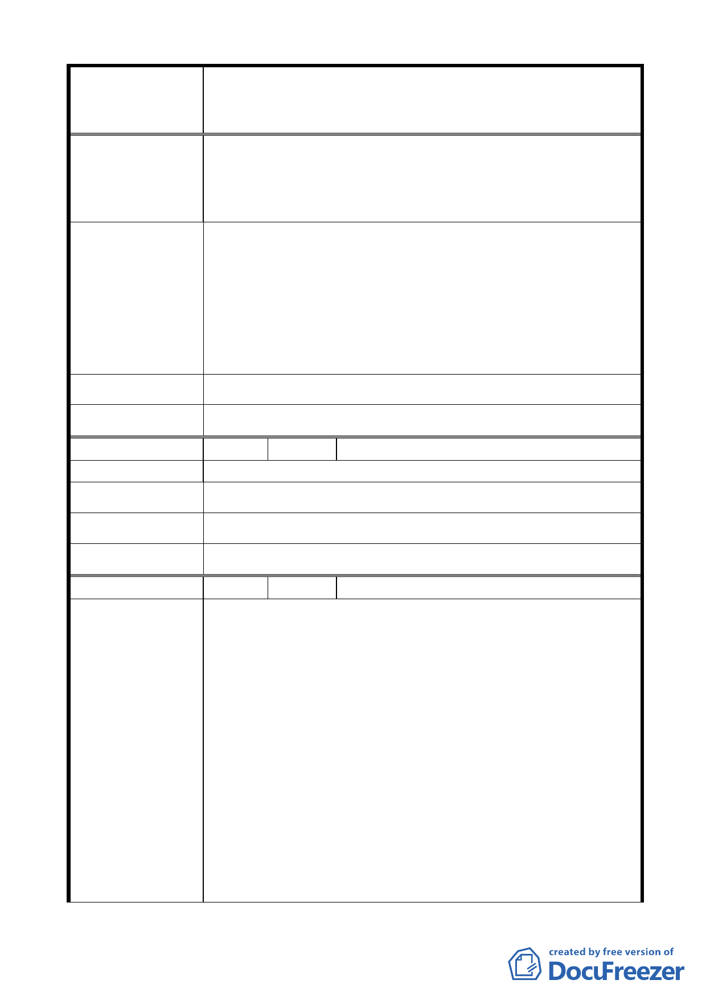

變更臺北市中山區北安段三小段 297-1 地號等20 筆高職
案 名 用地為機關用地（供國防部國防專區使用）及抽水站用地主
要計畫案
於現址居住超過 50 年原住戶。
2. 當年自籌金錢建蓋此住屋。
3. 現址土地部份由當年國防外語學校核准在此土地上建蓋
目前磚造房子。
1. 現當由「國防部」、「台北市政府都市計畫委員會」協調
為「現址規劃、就地安置與美化」（總戶數僅 13 戶左右）
易處理。
建 議 辦 法 2. 拆遷補償並擁有優先承購現址土地權，原地重建。
3. 履行當年馬英九前市長（現任馬總統）原則「先安置後
處理」辦法，於本中山區現址附近安置住戶。
4. 原址興建與抽水站兼併之房舍，就地安置。
市 府 回 覆 意 見 同編號 1 市府回應說明。
大 會 決 議 同編號 1 決議。
編 號 4 陳情人 何建成
陳 情 理 由 有利市民之公共建設。
建 議 辦 法 先合理安置再作拆遷（請積極有效率的速辦）。
市 府 回 覆 意 見 同編號 1 市府回應說明。
大 會 決 議 同編號 1 決議。
編 號 5 陳情人 潘文立
1. 機關用地：國防部未來建設設施應配合「圓山公園園區、
忠烈祠，及未來七海文化園區」，帶來之人潮與車潮，設
置對外之停車場，以紓解海軍、空軍總部平時上班人員
及假日休閒人潮帶來之停車問題，造成此處交通之亂象。
2. 抽水站用地：依其說明資料，民國 87 年 10 月 15 日瑞伯
颱風造成北安路、明水路積水深度達 100 公分、民國 93
陳情理由
年 9 月 11 日暴雨造成北安路忠烈祠一帶積水 50 公分，
以及民國 97 年 9 月 12 日辛樂克颱風造成圓山飯店下方
隧道路及北安公園一帶積水 50 公分，這些地點均是離此
地點魚於低處（基隆河下游），在此上游處設置抽水站是否
合適？
3. 原住戶安置：400 巷內原住戶君是在 50 年前，在國防部
語文學校任職之人員，經國防部同意在此居住的軍人子
民，同為眷村軍民，故此地住戶非違建占住戶，幾次眷
-9-